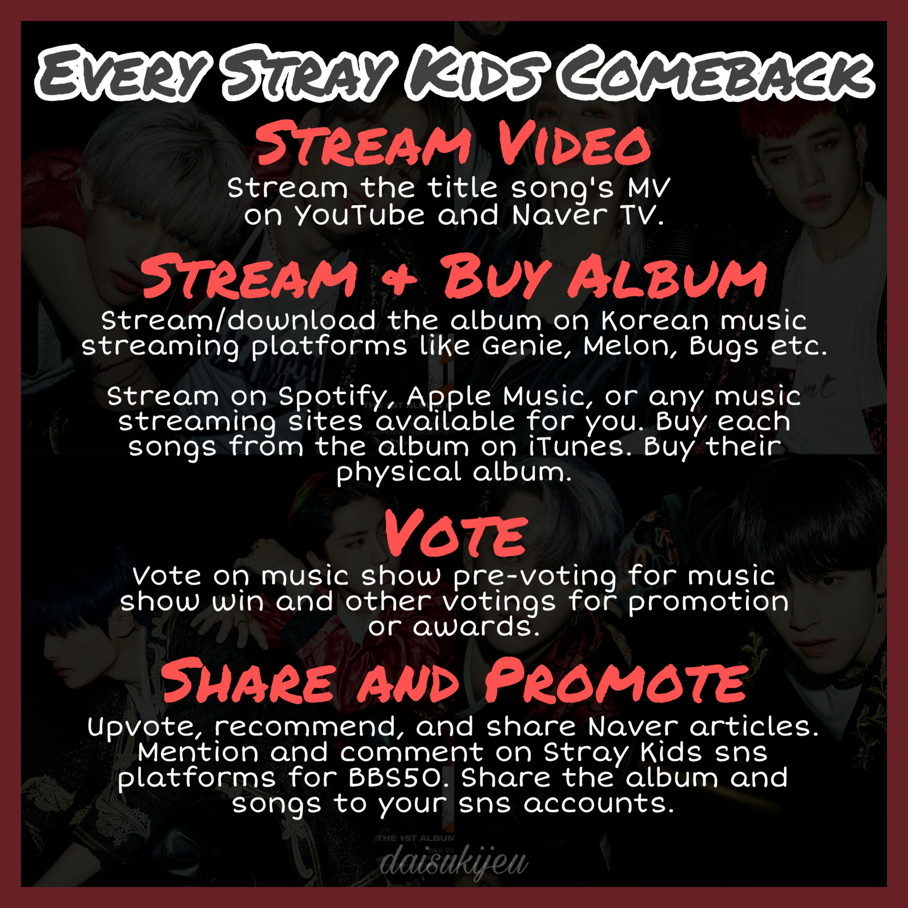
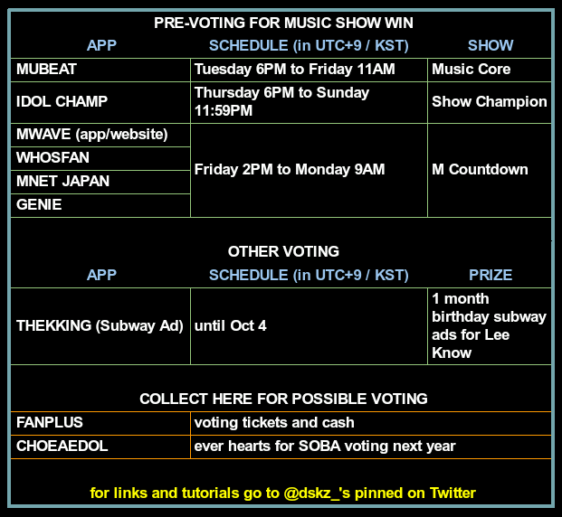

HOW TO SUPPORT STRAY KIDS 1ST ALBUM: GO LIVE

Open this thread for tutorials and guide
HOW TO SUPPORT STRAY KIDS
— 大スキズ (@dskz_) June 6, 2020
ㅡ a nested thread of ways to support stray kids on their album/single release and promotions.
VOTING SCHEDULE
Here are the schedule for music show pre-voting and other ongoing voting
Open this thread for voting tutorials and links
★ ALL SKZ VOTING
— 大スキズ (@dskz_) June 7, 2020
ㅡ a thread of links and tutorials of ongoing voting and preparation for voting Stray Kids. You may bookmark this for easy access. I will update as fast as I can.